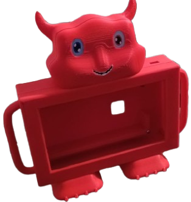
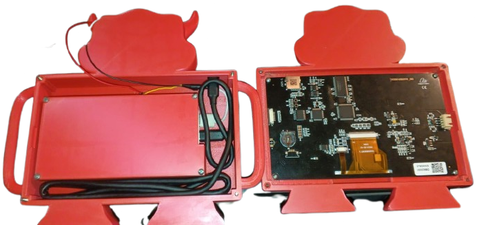

Diseño 3D & Modelado Orgánico
Case Ergonómico Infantil para Pantalla Nexus (Multiplikid)
Desarrollo de un estuche protector especializado y amigable para niños, integrando pantalla Nexus y powerbank con un concepto orgánico y funcional.

Vista general del prototipo terminado

Modelado 3D de la estructura principal

Ensamblaje y vista de componentes internos
Demostración de funcionalidad y soporte
Interacción y ergonomía infantil
Detalles Técnicos del Diseño
- Enfoque Ergonómico: Silueta inspirada en formas orgánicas (cara de animal) para conectar visualmente con el público infantil, evitando bordes filosos o geometrías industriales frías.
- Integración de Hardware: Espacio calculado a la medida para albergar con seguridad la pantalla Nexus y una batería portátil (powerbank).
- Soporte Estable: Incorporación de patas inferiores de apoyo que permiten mantener el dispositivo inclinado como una tablet de uso seguro sobre mesas o superficies planas.
- Herramientas CAD: Autodesk Fusion / Autodesk Inventor para modelado paramétrico y ensamblajes virtuales previos a la fabricación aditiva (impresión 3D).